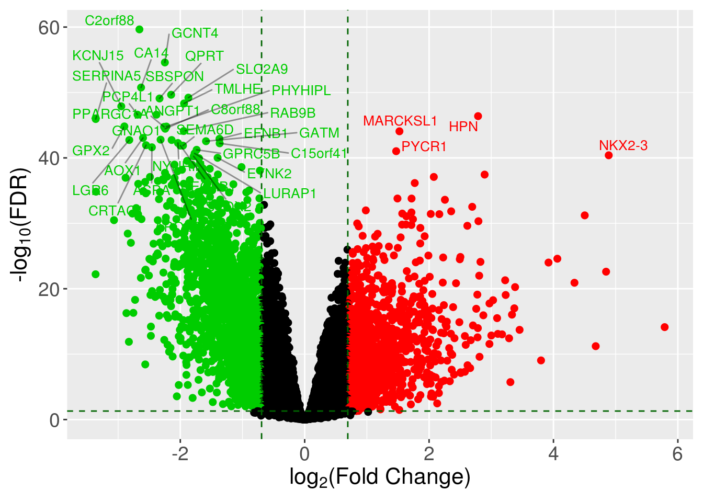
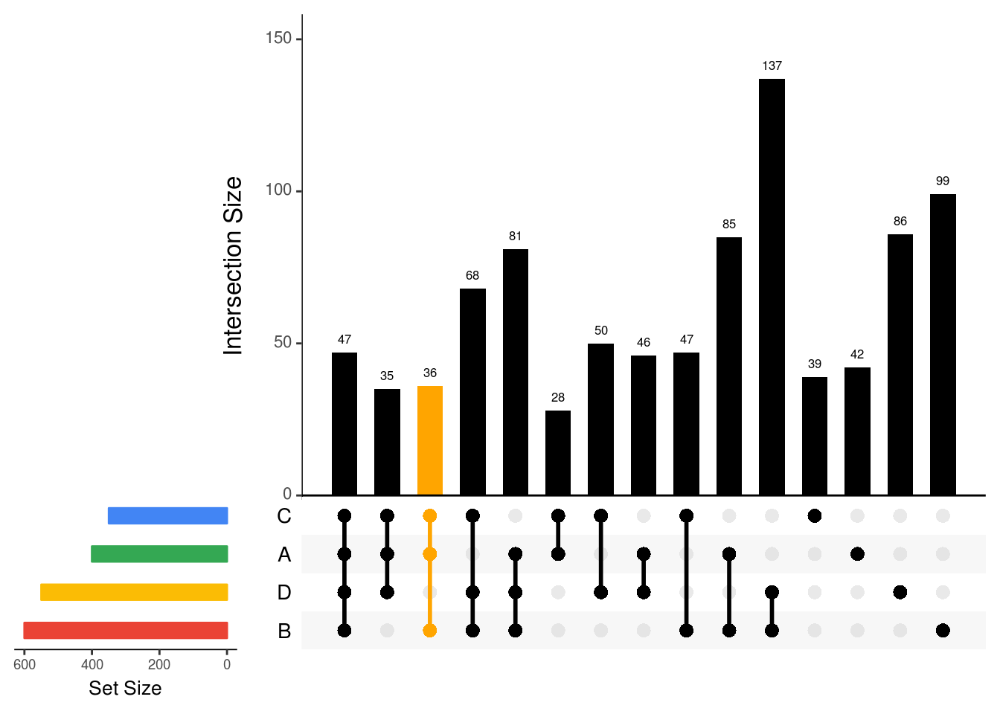

Chapter 1 Visualization
ggplot2 is a powerful package for data visualization in R. Most of the figures in this chapter are plotted using ggplot2. Other great packages such as VennDiagram, UpSetR, and ComplexHeatmap are used to generate special figures like Venn diagram, UpSet, and Heatmap, etc.
1.1 Volcano plot
library(ggrepel)
dataForVolcanoPlot <- readRDS(file='data/dataForVolcanoPlot.rds')
head(dataForVolcanoPlot)## symbol group logFC AveExpr t
## ENSG00000187699 C2orf88 protein_coding -2.657180 1.5056478 -19.46636
## ENSG00000176928 GCNT4 protein_coding -2.248112 0.5798701 -18.39206
## ENSG00000118298 CA14 protein_coding -2.630802 0.4748363 -17.57925
## ENSG00000103485 QPRT protein_coding -2.147259 1.9897483 -17.32704
## ENSG00000109667 SLC2A9 protein_coding -1.869863 1.6079446 -17.21612
## ENSG00000164764 SBSPON protein_coding -2.333725 2.5270242 -17.17468
## PValue FDR B
## ENSG00000187699 1.453473e-64 2.259715e-60 136.1299
## ENSG00000176928 3.303402e-59 2.567900e-55 123.6779
## ENSG00000118298 3.348976e-55 1.735551e-51 114.6210
## ENSG00000103485 5.729814e-54 2.227035e-50 111.9647
## ENSG00000109667 1.990189e-53 6.188294e-50 110.6756
## ENSG00000164764 3.166847e-53 8.205828e-50 110.2957logFcThreshold <- log(2)
adjPvalThreshold <- 0.05
dataForVolcanoPlot$Significance[with(dataForVolcanoPlot, logFC < logFcThreshold | FDR > adjPvalThreshold)] <- 'NS'
dataForVolcanoPlot$Significance[with(dataForVolcanoPlot, logFC >= logFcThreshold & FDR <= adjPvalThreshold)] <- 'UP'
dataForVolcanoPlot$Significance[with(dataForVolcanoPlot, logFC <= -logFcThreshold & FDR <= adjPvalThreshold)] <- 'DOWN'
ggplot(dataForVolcanoPlot, aes(x = logFC, y = -log10(FDR))) +
#xlim(-7.5,7.5)
xlab(expression('log'[2]*'(Fold Change)')) + ylab(expression('-log'[10]*'(FDR)')) +
geom_point(aes(color=Significance), alpha=1, size=2) +
geom_vline(xintercept = c(-logFcThreshold, logFcThreshold),
color='darkgreen', linetype='dashed') +
geom_hline(yintercept = -log10(adjPvalThreshold), color='darkgreen',linetype='dashed')+
scale_x_continuous(breaks=c(-4,-2,0,2,4,6,8,10)) +
scale_color_manual(values = c('green3',"black", "red")) +
geom_text_repel(data = subset(dataForVolcanoPlot, FDR < 10^-40 & logFC > log(2)), segment.alpha = 0.4,
aes(label = symbol), size = 3.5, color='red', segment.color = 'black') +
geom_text_repel(data = subset(dataForVolcanoPlot, FDR < 10^-40 & logFC < log(2)*-1), segment.alpha = 0.4,
aes(label = symbol), size = 3.5, color='green3', segment.color = 'black') +
theme_gray() +
theme(legend.position="none") +
theme(axis.text=element_text(size=14),
axis.title=element_text(size=16),
strip.text = element_text(size=14)) +
theme(plot.margin = margin(t = 0.25, r = 0.25, b = 0.25, l = 0.25, unit = "cm"))
1.2 Barplot
1.3 Boxplot
1.4 Scatter plot
1.5 Venn Diagram
1.6 UpSet plot
library(UpSetR)
A <- sample(1:1000, 400, replace = FALSE);
B <- sample(1:1000, 600, replace = FALSE);
C <- sample(1:1000, 350, replace = FALSE);
D <- sample(1:1000, 550, replace = FALSE);
E <- sample(1:1000, 375, replace = FALSE);
G <- sample(1:1000, 200, replace = FALSE);
H <- sample(1:1000, 777, replace = FALSE);
dataForUpSetPlot <- list(A=A, B=B, C=C, D=D, E=E, G=G, H=H)
setsBarColors <- c('#EA4335', '#FBBC05', '#34A853', '#4285F4')
### sort by degree
upset(fromList(dataForUpSetPlot),
nsets=length(dataForUpSetPlot),
nintersects = 1000,
sets = c("A", "B", "C", 'D'),
#keep.order = TRUE,
point.size = 3,
line.size = 1,
number.angles = 0,
text.scale = c(1.5, 1.2, 1.2, 1, 1.5, 1), # ytitle, ylabel, xtitle, xlabel, sets, number
order.by="degree",
matrix.color="black",
main.bar.color = 'black',
mainbar.y.label = 'Intersection Size',
sets.bar.color=setsBarColors,
queries = list(list(query = intersects,
params = list('A','B','C'), color = "orange", active = T)))